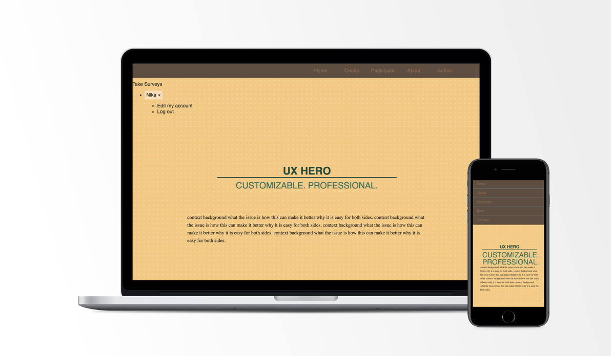
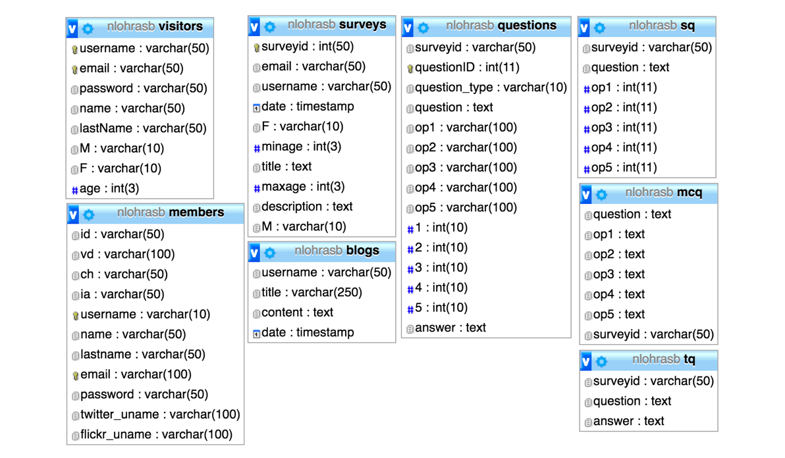
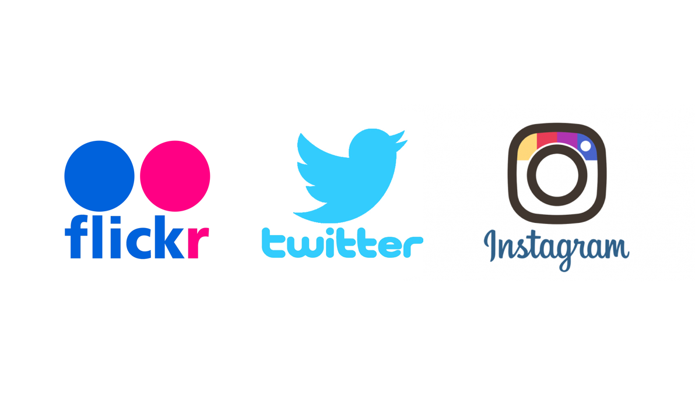

INTRODUCTION

VIEW PROJECT DETAILS
Introduction It is tough for designers to set up user testing frameworks and reach their desired audience to complete their research. It will be easier for them to work within an application to generate professional user testing and just share a link to reach out to audience. On the other hand visitors can just visit the website to take part in tests.
UX HERO is meant to provide an environment for researchers in the user experience field to reach research audience. Researchers are able to easily create surveys and indicate the intended audience for it so that it is ready for participants to complete tests.
Tools PHP, MySQL, HTML, CSS, Javascript, Git, Ajax, JSON, XML
DATABASE

The database is designed in a way that each user group has different permissions. Members can access creating surveys and tests, and participants can view various tests to choose from to participate based on their profile and whether they qualify for taking the test or not.
Each Member has a profile, within which their information, surveys, categories of research, and blog posts are showcased. Each survey belongs to a member and contains a set of questions of types: multiple choice, scale rating or text.
Once participants sign up and log in, their information is hashed and saved in the database and they can now see a list of members and browse tests within research categories: Information Architecture, Interaction Design, Visual Design and Content Hierarchy. User will remain logged in until their session is expired and they will be asked to log on again.
WEB SERVICES

Using web services, images from user's Instagram or flickr, and tweets from twitter are retrieved for each user based on the information they have provided in their profile. If a user decides not to provide this information during sign-up they can edit their profile later and add this information in at any time.